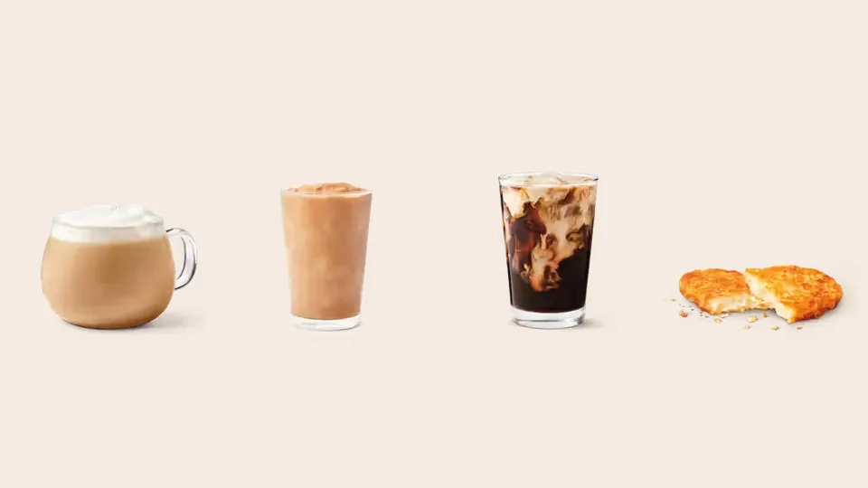

Unofficial fan guide - not affiliated with Tim Hortons
Pumpkin Spice, the White Cheddar Hashbrown, Strawberry Matcha and more: every Tim Hortons fall item in Canada, with dates.
Full Menu / Blog / Tim Hortons Fall Menu

Tim Hortons' 2026 fall menu in Canada launched September 1 and runs until November 1, 2026. It centres on the Pumpkin Spice Latte, Iced Latte, Iced Capp, Cold Brew and Muffin, plus the new White Cheddar Hashbrown. Availability can vary by restaurant.
The Canadian fall lineup began on September 1, 2026, when Tim Hortons announced that Pumpkin Spice season was back, with the pumpkin items available until November 1, 2026. That is a two-month run, and the other limited-time items running this fall each have their own dates (see the timeline below).
The start date moves a little each year. The earliest Canadian coverage we found landed in the last days of August in 2023 and 2025, and on September 1 in 2026. We did not check 2024.
| Year | First coverage of the Canadian fall lineup | Headline items |
|---|---|---|
| 2023 | August 29, 2023 | Pumpkin Spice Latte, Cold Brew and Iced Capp, plus the new Dulce Apple Fritter Dream Donut and the returning Muffin |
| 2025 | August 26, 2025 | Pumpkin Spice Latte, Iced Latte, Iced Capp, Cold Brew and Muffin, plus the Salted Caramel Butter Tart |
| 2026 | September 1, 2026 | Pumpkin Spice Latte, Iced Latte, Iced Capp, Cold Brew and Muffin, plus the White Cheddar Hashbrown |
The 2026 Canadian fall menu is five pumpkin items and one savoury newcomer, with a handful of other limited-time items running beside them.
Four drinks and a muffin: the Pumpkin Spice Latte (hot), Pumpkin Spice Iced Latte, Pumpkin Spice Iced Capp, Pumpkin Spice Cold Brew and the Pumpkin Spice Muffin. Matthew Feaver, Tim Hortons' Head of Innovation, said the flavour is beloved because it "evokes the warm and cozy vibes of Fall" after a long, hot summer. Calories, price ranges and ordering tweaks for each item are on our Pumpkin Spice page.
It is a savoury item announced alongside Pumpkin Spice on September 1, 2026, and available straight away. Foodgressing describes it as a crispy hashbrown made with Canadian potatoes, finished with white cheddar and herb seasoning. It sits on the food side of the menu, so see our breakfast menu for the rest of the hashbrown-style options.
Several items launched after the September 1 start, each with its own date:
For the wider 2026 picture, see all the newest Tim Hortons menu items.
The fall season is a series of drops, not one launch. This is the order they arrived in Canada, and when the main pumpkin run ends.
| Date | What happened |
|---|---|
| August 12, 2026 | Harry Potter menu launches (while supplies last) |
| September 1, 2026 | Pumpkin Spice lineup and White Cheddar Hashbrown arrive |
| September 16, 2026 | Honey Mustard returns |
| September 23, 2026 | Strawberry Matcha and Strawberry Soda Swirl arrive |
| September 30, 2026 | Orange Sprinkle Donut returns |
| November 1, 2026 | Pumpkin Spice items are available until this date |
The Cinnamon Caramel Apple Latte, Iced Latte and Coffee are U.S. items: they were announced for U.S. restaurants on August 12, 2026, and Tim Hortons' Canadian fall release does not list them. If you search "Tim Hortons fall menu" and see them, check the country first.
The U.S. also has a Halloween menu from September 30, with TWIX and Treat drinks, Mummy and Frankenstein donuts, an OREO Spookies n' Screams Croissant and a Timbits Trick-or-Treat Bucket (31 Timbits for $11.99, refills $6). Those are U.S. prices and items.
Some third-party menu sites also list fall items, such as a Maple Cinnamon Latte or Maple Pecan Dream Cookie, that are not in Tim Hortons' September 1, 2026 Canadian release. Treat unsourced price tables with caution.
Yes. Tim Hortons' release says items are available at participating restaurants, and franchise owners set their own prices. Our Pumpkin Spice page shows a Vancouver 2025 range of $3.49 to $5.19 before tax as one reference point. If a specific item matters to you, check the Tims App or ask at the counter before you make a trip.
Pumpkin Spice items are available until November 1, 2026, and holiday items follow. Tim Hortons had not announced holiday dates in the sources we reviewed, so see our holiday menu page for what to expect. Items that leave the menu are tracked on our discontinued items page.
In Canada, the 2026 fall menu started September 1, when Tim Hortons announced the return of Pumpkin Spice season. Earlier years started in the last days of August, based on the first press coverage we found.
The Pumpkin Spice items are available until November 1, 2026. Other fall items have their own dates: Honey Mustard and the Orange Sprinkle Donut are limited-time, and the Harry Potter items are available while supplies last.
Tim Hortons does not publish sales rankings. Its 2026 release calls Pumpkin Spice a beloved flavour and leads with the Latte, Iced Latte, Iced Capp and Cold Brew.
Not always. Items are offered at participating restaurants, so stock can differ from one location to the next.
Yes, for the Latte: it comes hot, and there is a separate Pumpkin Spice Iced Latte. The Iced Capp and Cold Brew are cold drinks.
The White Cheddar Hashbrown is the new food item announced with the Pumpkin Spice lineup on September 1, 2026. Strawberry Matcha and the Strawberry Soda Swirl followed on September 23.
It was announced for U.S. restaurants on August 12, 2026. Tim Hortons' Canadian fall release does not list it, so do not expect it at a Canadian restaurant unless the company says otherwise.
Not in the 2026 Canadian release, which lists drinks, the muffin and the White Cheddar Hashbrown. In 2023 the fall lineup included the Dulce Apple Fritter Dream Donut. The Orange Sprinkle Donut returned on September 30, 2026, but it is a charity donut, not part of the Pumpkin Spice launch.
It was part of the 2025 Canadian fall lineup and is not named in the 2026 release. Menus change each year, so it is not guaranteed to return.
It launched August 12, 2026, and was available while supplies last. We cannot confirm stock at any particular restaurant, so check before you visit.
Tim Hortons does not publish national prices, because franchise owners set them. Our Pumpkin Spice page lists a reference range, and your local restaurant or the Tims App will have exact prices.
This is an independent, unofficial guide. It is not affiliated with, endorsed by, or sponsored by Tim Hortons or Restaurant Brands International. Fall menu dates and items come from Tim Hortons' Canadian press releases and Canadian news coverage (2023, 2025, 2026). Availability and prices vary by restaurant. See Sources.